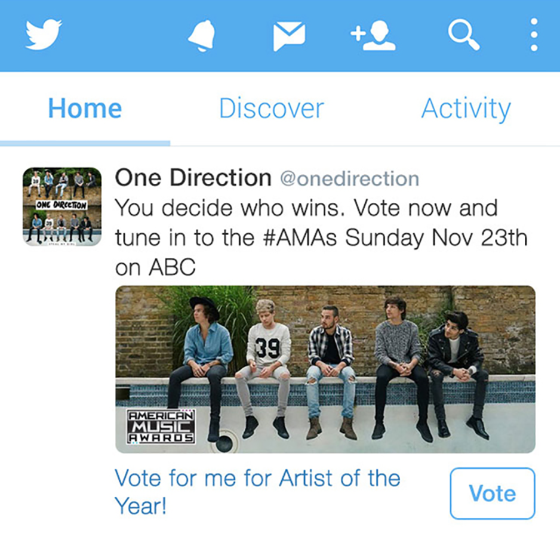
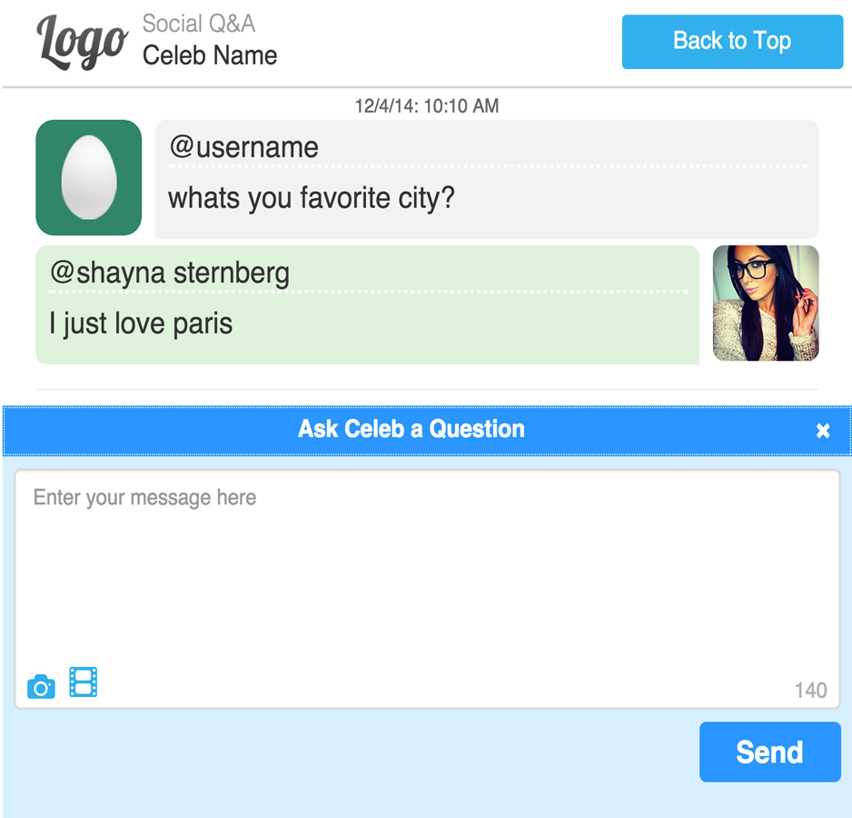
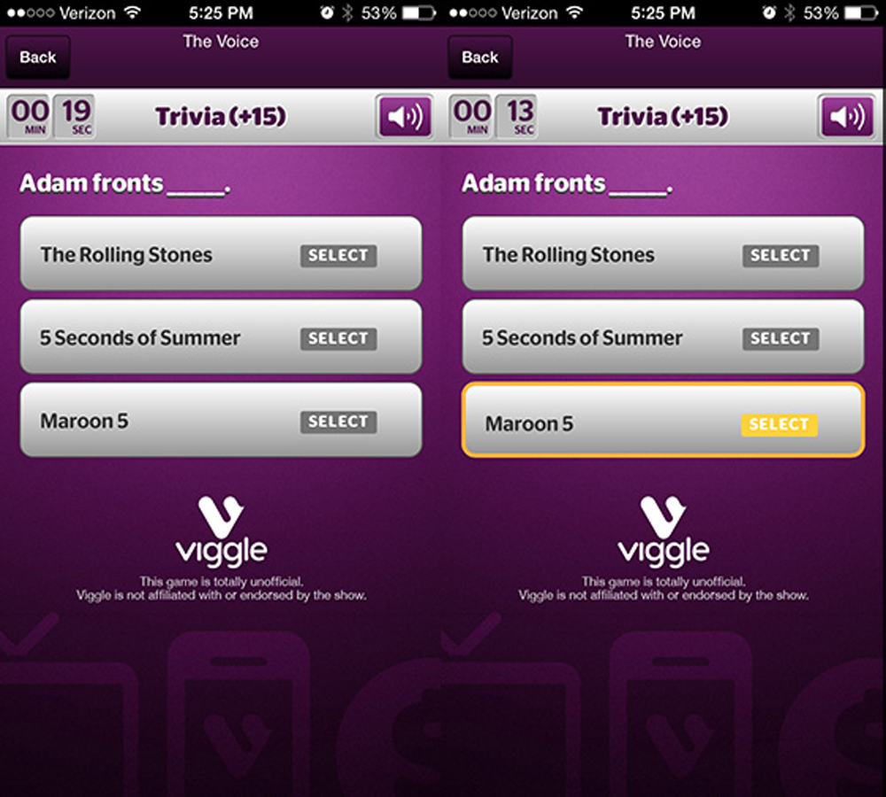

Umbrella Corp. (Los Angeles, CA and Detroit, MI)
Founder / Chief Hacking Officer
Freelance Web Developer applying a deep breadth of technical knowledge and skills to a wide variety of clients. Duties include gathering business requirements, creating site architecture and infrastructure, front and back-end development primarily using open source solutions, search engine optimization(SEO), copywriting and system administration. Latest project is a OTT video app (Netflix clone) being built with ReactNative
Jan. 2005 - CurrentCloudCompli (Laguna Hills, CA)
Platform Engineer
- Full stack engineer responsible for create flexible, well-documented, thoroughly tested Laravel modules and React.js components for use by CloudCompli developers
- Developed offline capable, progressive web applications for users in areas with limited to no internet connection
- Developed a lightweight state manager for React.js for use in progressive web applications.
- Leveraging Chef, scripted deployment of infrastructure to location workstations to aid in testing and also greatly reduce onboarding time for new developers.
- Developed RESTful API service and implemented OAuth 2.0 solution for restricting access
Age of Learning (Glendale, CA)
Full Stack Software Engineer
- Improved overall content loading speed by 35% by developing RESTful Web API server using PHP
- Developed in-house QA tool using AngularJS
- Improved in-house animation tool
- Interviewed potential candidates and mentored junior developers
Telescope, Inc. (Los Angeles, CA)
Front-end Software Engineer
- Utilized Backbone.js framework to create high-performance, single-page applications
- In Yeoman, created in-house, custom Backbone geunerator and created collection of Grunt taskes to streamline web development process from design to development to testing and patching
- Twitter Cards - Add link and/or anchor + highlight/mouseover
- Buscando Mi Ritmo - Add links
- Viggle Live - Add links
- Sprint/NASCAR most popular driver - Add links
- Top Trending - Add link
Luxury Link (Playa Del Rey, CA)
LAMP Software Engineer
- Implemented a tag manager that inventoried tracking tags, automated tag placement, and allowed tag placement via in-house CMS.
- Redesigned main product display pages
- Introduced LESS which helped simplify site stylesheet.
- Improved page load time by 8% by optimizing Smarty front-end templates
- Reduced database accesses per request by optimizing SQL statements
- Assisted in implementing GIT and taught other developers how to use
Dun & Bradstreet Credibility Corp (Malibu, CA)
LAMP Software Engineer
- Developed a Selenium testing framework for used in automated deployments
- Created a Content Management System with WYSIWYG interface for Product and Marketing Teams to create their own pages.
- Assisted in refactoring of site to use Zend Framework to simplify site architecture
- Maintained Wordpress microsites

Twitter Cards
Web Development

Social Q & A
Web/App Develpment

Viggle Live
Web/App Development